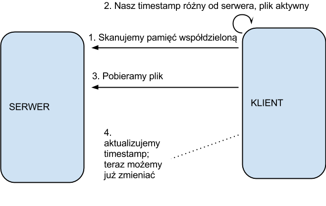

Co to jest:
Problemy:
Jak to jest zrobione:
Szczegóły:
ad1. przechowujemy aktualną zawartość serwera w postaci listy plików wraz ze znacznikami o aktywności pliku( czy nie został usunięty), jego względnej ścieżce oraz czas modyfikacji
ad2. dostęp do zasobu tablicy jest organizowany na zasadzie serwer=pisarz, klient=czytelnik; taka organizacja wynika z modelu współpracy - serwer zarządza aktualną wersję i jako jedyny modyfikuje tablicę, klient odczytuje jej zawartość w poszukiwaniu zmian do pobrania;
dobra wydajność
ad3. gdy klient zechce zgłosić zmianę (i jest uprawniony) blokuje modyfikację danego pliku - generowany jest i blokowany semafor dla tego pliku (aby nikt inny nie zmieniał pliku); ów semafor odblokowywany jest przez serwer po pomyślnym przetworzeniu zgłoszenia zmiany; blokujemy jedynie wybrane pliki - dobra wydajność
ad4. ponieważ tylko jedna wersja pliku może być zgłaszana równocześnie do zmiany modyfikowane wersje umieszczane są w folderze oczekujących zmian który skanuje serwer; uploadowane są pliki z zachowaniem wszelkich informacji dotyczących czasów modyfikacji itp.
ad5. serwer w ukrytych katalogach przetrzymuje wersje archiwalne tymczasem odwzorowując strukturę katalogu za pomocą dowiązań twardych - zapobiega to mnożeniu plików i gwarantuje dostęp do właściwych wersji przez programy klienckie
ad8. klient w momencie modyfikacji pliku w swoim katalogu tworzy plik posiadający w nazwie znacznik czasowy - dopóki ów znacznik nie będzie zgodny z wersją serwera klient musi wstrzymać się z wysyłaniem modyfikacji; w ten sposób klient nie wyśle nieaktualnej wersji pliku (poprzedniej) ani nie nadpisze zmiany wysyłanej przez inny program kliencki
ad9. na czas wybierania wersji należy “zamrozić” dany plik, aby nikt nie zmodyfikował go mimo naszej wiedzy w czasie między odebraniem listy dostępnych wersji (klient skanuje odpowiednie struktury) a wyznaczeniem wersji aktualnej; wyznaczenie aktualnej to skopiowanie wybranej jako nowa (nowy znacznik czasowy) - w ten sposób mamy pełną historię zmian z wyróżnieniem wszelkich wersji (można dowiedzieć się o wersji, która była przywróceniem archiwalnej)
Uruchomienie:
Dostarczony jest makefile. Aplikacji serwera jako argument podajemy nazwę katalogu, w którym bedzie przechowywał dane - najlepiej nieistniejcy katalog. Aplikacji klienta przekazujemy nazwę istniejącego katalogu, który będzie synchronizowany.
Ograniczenia (“jak na spowiedzi”):
Cechy dyskusyjne:
Grafiki:
a) skrót zgłaszania zmiany:
b) skrót odbioru zmiany (usunięcia):
